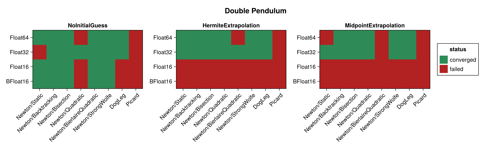
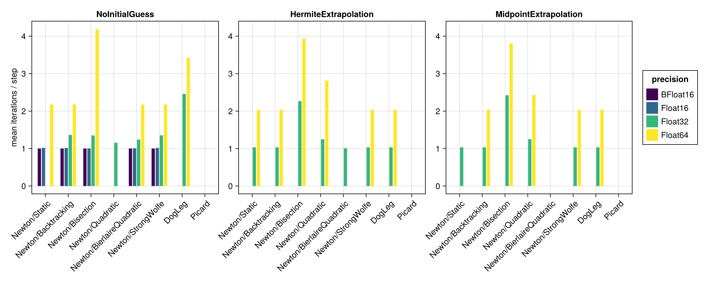
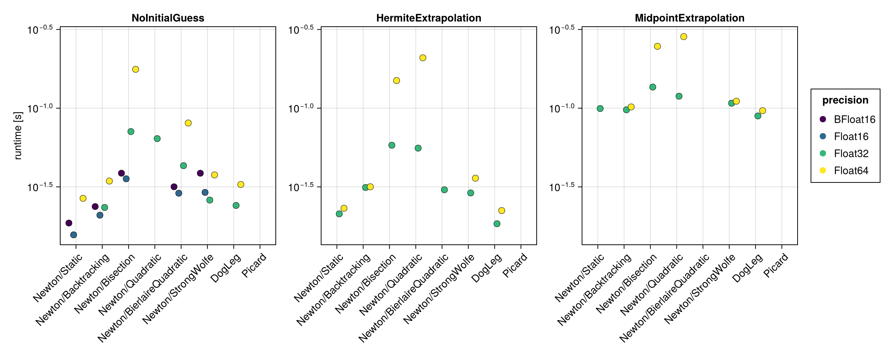
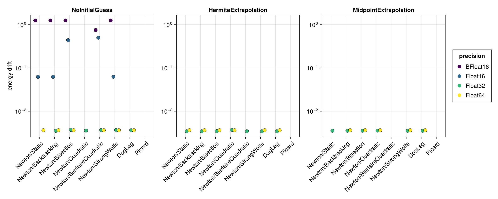
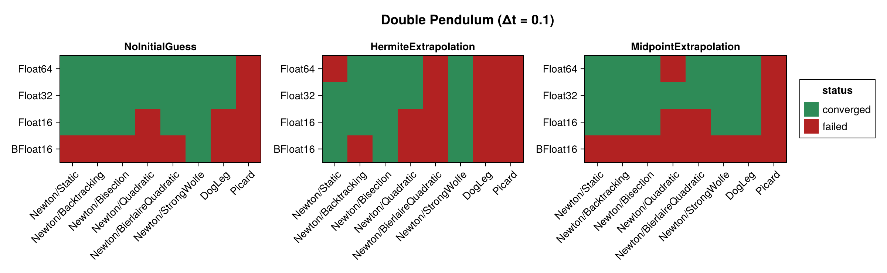
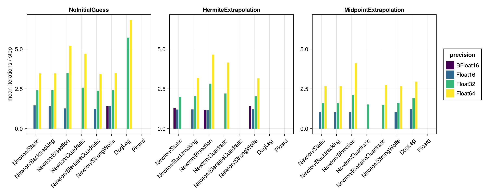
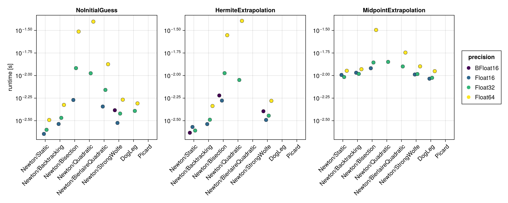
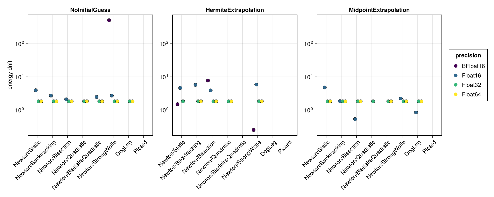

Double Pendulum
The double pendulum is a chaotic, strongly nonlinear Hamiltonian system. It is built here with hodeproblem (the canonical Hamiltonian form), so the implicit midpoint equations require genuine nonlinear iterations at every step. Because the Hamiltonian $H(t, q, p)$ depends on both the coordinates $q$ and the momenta $p$, the energy-drift proxy is evaluated from the full $(q, p)$ state.
Because the forces are $O(g m l)$, this problem's nonlinear residual bottoms out well above $\varepsilon(T)$, so the solver tolerance is relaxed to $256\,\varepsilon(T)$. That floor is a property of the problem's scale, not of the precision: measured, it sits at $\approx 200 \dots 260\,\varepsilon(T)$ at every precision. It is also why the results table below carries an at_tolerance column with every row flagged — on this problem a converged run stops at its target rather than below it. Read the caveat literally at 16-bit: $256\,\varepsilon(\texttt{BFloat16})$ is $2.0$, comparable to the energy itself, so a BFloat16 row here reports having met a target too loose to say much.
The benchmark below is regenerated at documentation build time with a single, fast timing pass. See the driver script scripts/midpoint_double_pendulum.jl for accurate BenchmarkTools measurements. The results are shown first for the standard step $\Delta t = 0.01$ and then repeated for a coarse step $\Delta t = 0.1$ (see Coarse time step (Δt = 0.1)).
using SolverBenchmark
spec = double_pendulum_spec(timespan = (0.0, 10.0), timestep = 0.01)
df = cached_sweep("double_pendulum_dt0.01") do
run_benchmark(spec; timing = :quick, verbose = false, quiet = true)
endConvergence
plot_convergence(df; title = "Double Pendulum")
Nonlinear iterations
Mean number of nonlinear-solver iterations per time step (converged runs only):
plot_iterations(df)
Run time
plot_runtime(df)
Energy drift
Drift of the conserved energy $H(t, q, p)$ of the double pendulum:
plot_energy_drift(df)
Discussion
- The problem is chaotic and nonlinear, so Newton needs genuine iterations at every step. All six line searches behave similarly;
Newton/Quadraticis the weakest of them but still converges for two thirds of the runs.Picardnever converges here, and atΔt = 0.01it is the only failure atFloat32/Float64; at the coarse stepDogLegjoins it. - Precision dominates: 21/24 at both
Float32andFloat64, 11/24 atFloat16and 5/24 atBFloat16(58/96 overall; 64/96 at the coarse step). Every converged row is flagged in theat_tolerancecolumn, because on this problem the residual floor is the tolerance — see the note above. - No closed-form solution is available, so accuracy is judged solely through the energy drift, which scales with the floating point precision.
Results table
markdown_table(summary_table(df))| precision | solver_label | initial_guess | converged | iterations_mean | runtime_s | max_residual | at_tolerance | energy_drift |
|---|---|---|---|---|---|---|---|---|
| BFloat16 | Newton/Static | NoInitialGuess | ✓ | 1 | 0.0186 | 1.77 | ✓ | 1.25 |
| BFloat16 | Newton/Static | HermiteExtrapolation | ✗ | — | — | — | ✗ | — |
| BFloat16 | Newton/Static | MidpointExtrapolation | ✗ | — | — | — | ✗ | — |
| BFloat16 | Newton/Backtracking | NoInitialGuess | ✓ | 1 | 0.0237 | 1.77 | ✓ | 1.25 |
| BFloat16 | Newton/Backtracking | HermiteExtrapolation | ✗ | — | — | — | ✗ | — |
| BFloat16 | Newton/Backtracking | MidpointExtrapolation | ✗ | — | — | — | ✗ | — |
| BFloat16 | Newton/Bisection | NoInitialGuess | ✓ | 1 | 0.0386 | 1.42 | ✓ | 1.25 |
| BFloat16 | Newton/Bisection | HermiteExtrapolation | ✗ | — | — | — | ✗ | — |
| BFloat16 | Newton/Bisection | MidpointExtrapolation | ✗ | — | — | — | ✗ | — |
| BFloat16 | Newton/Quadratic | NoInitialGuess | ✗ | 1.13 | 0.0406 | 5.91 | ✗ | — |
| BFloat16 | Newton/Quadratic | HermiteExtrapolation | ✗ | — | — | — | ✗ | — |
| BFloat16 | Newton/Quadratic | MidpointExtrapolation | ✗ | — | — | — | ✗ | — |
| BFloat16 | Newton/BierlaireQuadratic | NoInitialGuess | ✓ | 1 | 0.0317 | 1.77 | ✓ | 0.75 |
| BFloat16 | Newton/BierlaireQuadratic | HermiteExtrapolation | ✗ | — | — | — | ✗ | — |
| BFloat16 | Newton/BierlaireQuadratic | MidpointExtrapolation | ✗ | — | — | — | ✗ | — |
| BFloat16 | Newton/StrongWolfe | NoInitialGuess | ✓ | 1 | 0.0386 | 1.77 | ✓ | 1.25 |
| BFloat16 | Newton/StrongWolfe | HermiteExtrapolation | ✗ | — | — | — | ✗ | — |
| BFloat16 | Newton/StrongWolfe | MidpointExtrapolation | ✗ | — | — | — | ✗ | — |
| BFloat16 | DogLeg | NoInitialGuess | ✗ | 1.41 | 0.0195 | 7.44 | ✗ | — |
| BFloat16 | DogLeg | HermiteExtrapolation | ✗ | — | — | — | ✗ | — |
| BFloat16 | DogLeg | MidpointExtrapolation | ✗ | — | — | — | ✗ | — |
| BFloat16 | Picard | NoInitialGuess | ✗ | 1.31 | 0.0297 | 106 | ✗ | — |
| BFloat16 | Picard | HermiteExtrapolation | ✗ | — | — | — | ✗ | — |
| BFloat16 | Picard | MidpointExtrapolation | ✗ | — | — | — | ✗ | — |
| Float16 | Newton/Static | NoInitialGuess | ✓ | 1.02 | 0.0157 | 0.247 | ✓ | 0.0625 |
| Float16 | Newton/Static | HermiteExtrapolation | ✗ | — | — | — | ✗ | — |
| Float16 | Newton/Static | MidpointExtrapolation | ✗ | — | — | — | ✗ | — |
| Float16 | Newton/Backtracking | NoInitialGuess | ✓ | 1.02 | 0.0209 | 0.247 | ✓ | 0.0625 |
| Float16 | Newton/Backtracking | HermiteExtrapolation | ✗ | — | — | — | ✗ | — |
| Float16 | Newton/Backtracking | MidpointExtrapolation | ✗ | — | — | — | ✗ | — |
| Float16 | Newton/Bisection | NoInitialGuess | ✓ | 1 | 0.0356 | 0.243 | ✓ | 0.438 |
| Float16 | Newton/Bisection | HermiteExtrapolation | ✗ | — | — | — | ✗ | — |
| Float16 | Newton/Bisection | MidpointExtrapolation | ✗ | — | — | — | ✗ | — |
| Float16 | Newton/Quadratic | NoInitialGuess | ✗ | 1.11 | 0.0669 | 5.75 | ✗ | — |
| Float16 | Newton/Quadratic | HermiteExtrapolation | ✗ | — | — | — | ✗ | — |
| Float16 | Newton/Quadratic | MidpointExtrapolation | ✗ | — | — | — | ✗ | — |
| Float16 | Newton/BierlaireQuadratic | NoInitialGuess | ✓ | 1.01 | 0.0288 | 0.235 | ✓ | 0.5 |
| Float16 | Newton/BierlaireQuadratic | HermiteExtrapolation | ✗ | — | — | — | ✗ | — |
| Float16 | Newton/BierlaireQuadratic | MidpointExtrapolation | ✗ | — | — | — | ✗ | — |
| Float16 | Newton/StrongWolfe | NoInitialGuess | ✓ | 1.02 | 0.0292 | 0.247 | ✓ | 0.0625 |
| Float16 | Newton/StrongWolfe | HermiteExtrapolation | ✗ | — | — | — | ✗ | — |
| Float16 | Newton/StrongWolfe | MidpointExtrapolation | ✗ | — | — | — | ✗ | — |
| Float16 | DogLeg | NoInitialGuess | ✗ | — | — | — | ✗ | — |
| Float16 | DogLeg | HermiteExtrapolation | ✗ | — | — | — | ✗ | — |
| Float16 | DogLeg | MidpointExtrapolation | ✗ | — | — | — | ✗ | — |
| Float16 | Picard | NoInitialGuess | ✗ | 1.97 | 0.0327 | 75.7 | ✗ | — |
| Float16 | Picard | HermiteExtrapolation | ✗ | — | — | — | ✗ | — |
| Float16 | Picard | MidpointExtrapolation | ✗ | — | — | — | ✗ | — |
| Float32 | Newton/Static | NoInitialGuess | ✗ | 1.46 | 0.0198 | 3.78e-05 | ✗ | — |
| Float32 | Newton/Static | HermiteExtrapolation | ✓ | 1.03 | 0.0213 | 3.04e-05 | ✓ | 0.00344 |
| Float32 | Newton/Static | MidpointExtrapolation | ✓ | 1.03 | 0.0995 | 3.05e-05 | ✓ | 0.00354 |
| Float32 | Newton/Backtracking | NoInitialGuess | ✓ | 1.36 | 0.0234 | 3.03e-05 | ✓ | 0.00352 |
| Float32 | Newton/Backtracking | HermiteExtrapolation | ✓ | 1.03 | 0.0313 | 3.04e-05 | ✓ | 0.00344 |
| Float32 | Newton/Backtracking | MidpointExtrapolation | ✓ | 1.03 | 0.0977 | 3.05e-05 | ✓ | 0.00354 |
| Float32 | Newton/Bisection | NoInitialGuess | ✓ | 1.35 | 0.071 | 3.04e-05 | ✓ | 0.00372 |
| Float32 | Newton/Bisection | HermiteExtrapolation | ✓ | 2.27 | 0.0581 | 2.99e-05 | ✓ | 0.00346 |
| Float32 | Newton/Bisection | MidpointExtrapolation | ✓ | 2.42 | 0.136 | 3.05e-05 | ✓ | 0.00354 |
| Float32 | Newton/Quadratic | NoInitialGuess | ✓ | 1.16 | 0.0641 | 3.04e-05 | ✓ | 0.00357 |
| Float32 | Newton/Quadratic | HermiteExtrapolation | ✓ | 1.25 | 0.0557 | 3.03e-05 | ✓ | 0.00368 |
| Float32 | Newton/Quadratic | MidpointExtrapolation | ✓ | 1.25 | 0.119 | 3.04e-05 | ✓ | 0.00356 |
| Float32 | Newton/BierlaireQuadratic | NoInitialGuess | ✓ | 1.24 | 0.0431 | 3.04e-05 | ✓ | 0.00367 |
| Float32 | Newton/BierlaireQuadratic | HermiteExtrapolation | ✓ | 1.01 | 0.0303 | 2.98e-05 | ✓ | 0.00344 |
| Float32 | Newton/BierlaireQuadratic | MidpointExtrapolation | ✗ | 1.06 | 0.105 | 7.02e-05 | ✗ | — |
| Float32 | Newton/StrongWolfe | NoInitialGuess | ✓ | 1.35 | 0.0261 | 3.02e-05 | ✓ | 0.00366 |
| Float32 | Newton/StrongWolfe | HermiteExtrapolation | ✓ | 1.03 | 0.0289 | 3.04e-05 | ✓ | 0.00344 |
| Float32 | Newton/StrongWolfe | MidpointExtrapolation | ✓ | 1.03 | 0.108 | 3.05e-05 | ✓ | 0.00354 |
| Float32 | DogLeg | NoInitialGuess | ✓ | 2.46 | 0.0241 | 3.04e-05 | ✓ | 0.00362 |
| Float32 | DogLeg | HermiteExtrapolation | ✓ | 1.03 | 0.0184 | 3.04e-05 | ✓ | 0.00344 |
| Float32 | DogLeg | MidpointExtrapolation | ✓ | 1.03 | 0.0893 | 3.05e-05 | ✓ | 0.00354 |
| Float32 | Picard | NoInitialGuess | ✗ | 2.05 | 0.0651 | 72.1 | ✗ | — |
| Float32 | Picard | HermiteExtrapolation | ✗ | 2.01 | 0.0467 | 1.24 | ✗ | — |
| Float32 | Picard | MidpointExtrapolation | ✗ | 2 | 0.114 | 0.0432 | ✗ | — |
| Float64 | Newton/Static | NoInitialGuess | ✓ | 2.17 | 0.0268 | 5.65e-14 | ✓ | 0.00363 |
| Float64 | Newton/Static | HermiteExtrapolation | ✓ | 2.04 | 0.0231 | 5.53e-14 | ✓ | 0.00363 |
| Float64 | Newton/Static | MidpointExtrapolation | ✗ | 2.23 | 0.13 | 7.03e-14 | ✗ | — |
| Float64 | Newton/Backtracking | NoInitialGuess | ✓ | 2.17 | 0.0344 | 5.65e-14 | ✓ | 0.00363 |
| Float64 | Newton/Backtracking | HermiteExtrapolation | ✓ | 2.04 | 0.0317 | 5.53e-14 | ✓ | 0.00363 |
| Float64 | Newton/Backtracking | MidpointExtrapolation | ✓ | 2.04 | 0.102 | 5.66e-14 | ✓ | 0.00363 |
| Float64 | Newton/Bisection | NoInitialGuess | ✓ | 4.19 | 0.177 | 5.58e-14 | ✓ | 0.00363 |
| Float64 | Newton/Bisection | HermiteExtrapolation | ✓ | 3.93 | 0.15 | 5.67e-14 | ✓ | 0.00363 |
| Float64 | Newton/Bisection | MidpointExtrapolation | ✓ | 3.81 | 0.247 | 5.67e-14 | ✓ | 0.00363 |
| Float64 | Newton/Quadratic | NoInitialGuess | ✗ | 3.82 | 0.221 | 6.03e-14 | ✗ | — |
| Float64 | Newton/Quadratic | HermiteExtrapolation | ✓ | 2.81 | 0.209 | 5.67e-14 | ✓ | 0.00363 |
| Float64 | Newton/Quadratic | MidpointExtrapolation | ✓ | 2.43 | 0.285 | 5.63e-14 | ✓ | 0.00363 |
| Float64 | Newton/BierlaireQuadratic | NoInitialGuess | ✓ | 2.17 | 0.0805 | 5.62e-14 | ✓ | 0.00363 |
| Float64 | Newton/BierlaireQuadratic | HermiteExtrapolation | ✗ | 2.14 | 0.0576 | 5.78e-14 | ✗ | — |
| Float64 | Newton/BierlaireQuadratic | MidpointExtrapolation | ✗ | 2.15 | 0.13 | 5.79e-14 | ✗ | — |
| Float64 | Newton/StrongWolfe | NoInitialGuess | ✓ | 2.17 | 0.0377 | 5.65e-14 | ✓ | 0.00363 |
| Float64 | Newton/StrongWolfe | HermiteExtrapolation | ✓ | 2.04 | 0.0359 | 5.53e-14 | ✓ | 0.00363 |
| Float64 | Newton/StrongWolfe | MidpointExtrapolation | ✓ | 2.04 | 0.111 | 5.66e-14 | ✓ | 0.00363 |
| Float64 | DogLeg | NoInitialGuess | ✓ | 3.42 | 0.0327 | 5.67e-14 | ✓ | 0.00363 |
| Float64 | DogLeg | HermiteExtrapolation | ✓ | 2.04 | 0.0224 | 5.53e-14 | ✓ | 0.00363 |
| Float64 | DogLeg | MidpointExtrapolation | ✓ | 2.04 | 0.0964 | 5.66e-14 | ✓ | 0.00363 |
| Float64 | Picard | NoInitialGuess | ✗ | 2.05 | 0.128 | 72.1 | ✗ | — |
| Float64 | Picard | HermiteExtrapolation | ✗ | 2 | 0.0933 | 1.24 | ✗ | — |
| Float64 | Picard | MidpointExtrapolation | ✗ | 2.01 | 0.176 | 0.0431 | ✗ | — |
Coarse time step (Δt = 0.1)
With a ten times larger step the equations become more strongly nonlinear, which stresses the solvers noticeably more than the $\Delta t = 0.01$ results above.
spec1 = double_pendulum_spec(timespan = (0.0, 10.0), timestep = 0.1)
df1 = cached_sweep("double_pendulum_dt0.1") do
run_benchmark(spec1; timing = :quick, verbose = false, quiet = true)
endConvergence
plot_convergence(df1; title = "Double Pendulum (Δt = 0.1)")
Nonlinear iterations
plot_iterations(df1)
Run time
plot_runtime(df1)
Energy drift
plot_energy_drift(df1)
Results table
markdown_table(summary_table(df1))| precision | solver_label | initial_guess | converged | iterations_mean | runtime_s | max_residual | at_tolerance | energy_drift |
|---|---|---|---|---|---|---|---|---|
| BFloat16 | Newton/Static | NoInitialGuess | ✗ | — | — | — | ✗ | — |
| BFloat16 | Newton/Static | HermiteExtrapolation | ✓ | 1.3 | 0.00232 | 2 | ✓ | 1.5 |
| BFloat16 | Newton/Static | MidpointExtrapolation | ✗ | — | — | — | ✗ | — |
| BFloat16 | Newton/Backtracking | NoInitialGuess | ✗ | — | — | — | ✗ | — |
| BFloat16 | Newton/Backtracking | HermiteExtrapolation | ✗ | 1.78 | 0.0037 | 1.08e+04 | ✗ | — |
| BFloat16 | Newton/Backtracking | MidpointExtrapolation | ✗ | — | — | — | ✗ | — |
| BFloat16 | Newton/Bisection | NoInitialGuess | ✗ | 1.19 | 0.00555 | 26 | ✗ | — |
| BFloat16 | Newton/Bisection | HermiteExtrapolation | ✓ | 1.17 | 0.00602 | 1.81 | ✓ | 7.75 |
| BFloat16 | Newton/Bisection | MidpointExtrapolation | ✗ | — | — | — | ✗ | — |
| BFloat16 | Newton/Quadratic | NoInitialGuess | ✗ | 1.3 | 0.00476 | 20.1 | ✗ | — |
| BFloat16 | Newton/Quadratic | HermiteExtrapolation | ✗ | — | — | — | ✗ | — |
| BFloat16 | Newton/Quadratic | MidpointExtrapolation | ✗ | — | — | — | ✗ | — |
| BFloat16 | Newton/BierlaireQuadratic | NoInitialGuess | ✗ | 1.06 | 0.00441 | 8.56 | ✗ | — |
| BFloat16 | Newton/BierlaireQuadratic | HermiteExtrapolation | ✗ | — | — | — | ✗ | — |
| BFloat16 | Newton/BierlaireQuadratic | MidpointExtrapolation | ✗ | — | — | — | ✗ | — |
| BFloat16 | Newton/StrongWolfe | NoInitialGuess | ✓ | 1.41 | 0.00413 | 4.69 | ✓ | 510 |
| BFloat16 | Newton/StrongWolfe | HermiteExtrapolation | ✓ | 1.41 | 0.00402 | 2 | ✓ | 0.25 |
| BFloat16 | Newton/StrongWolfe | MidpointExtrapolation | ✗ | — | — | — | ✗ | — |
| BFloat16 | DogLeg | NoInitialGuess | ✗ | 4.31 | 0.00482 | 37 | ✗ | — |
| BFloat16 | DogLeg | HermiteExtrapolation | ✗ | 4.06 | 0.00455 | 4.99e+03 | ✗ | — |
| BFloat16 | DogLeg | MidpointExtrapolation | ✗ | — | — | — | ✗ | — |
| BFloat16 | Picard | NoInitialGuess | ✗ | 3.51 | 0.00414 | 130 | ✗ | — |
| BFloat16 | Picard | HermiteExtrapolation | ✗ | 4.47 | 0.00662 | 6.72e+03 | ✗ | — |
| BFloat16 | Picard | MidpointExtrapolation | ✗ | — | — | — | ✗ | — |
| Float16 | Newton/Static | NoInitialGuess | ✓ | 1.46 | 0.00226 | 0.232 | ✓ | 3.94 |
| Float16 | Newton/Static | HermiteExtrapolation | ✓ | 1.2 | 0.00269 | 0.245 | ✓ | 4.62 |
| Float16 | Newton/Static | MidpointExtrapolation | ✓ | 1.06 | 0.0102 | 0.221 | ✓ | 4.78 |
| Float16 | Newton/Backtracking | NoInitialGuess | ✓ | 1.42 | 0.00291 | 0.224 | ✓ | 2.72 |
| Float16 | Newton/Backtracking | HermiteExtrapolation | ✓ | 1.21 | 0.0029 | 0.232 | ✓ | 5.72 |
| Float16 | Newton/Backtracking | MidpointExtrapolation | ✓ | 1.03 | 0.0107 | 0.244 | ✓ | 1.84 |
| Float16 | Newton/Bisection | NoInitialGuess | ✓ | 1.27 | 0.00536 | 0.229 | ✓ | 2.09 |
| Float16 | Newton/Bisection | HermiteExtrapolation | ✓ | 1.16 | 0.00528 | 0.221 | ✓ | 3.91 |
| Float16 | Newton/Bisection | MidpointExtrapolation | ✓ | 1.04 | 0.012 | 0.244 | ✓ | 0.531 |
| Float16 | Newton/Quadratic | NoInitialGuess | ✗ | 1.26 | 0.00481 | 1.64 | ✗ | — |
| Float16 | Newton/Quadratic | HermiteExtrapolation | ✗ | 1.2 | 0.00418 | 5.27 | ✗ | — |
| Float16 | Newton/Quadratic | MidpointExtrapolation | ✗ | 1.17 | 0.0116 | 1.38 | ✗ | — |
| Float16 | Newton/BierlaireQuadratic | NoInitialGuess | ✓ | 1.25 | 0.00454 | 0.352 | ✓ | 2.47 |
| Float16 | Newton/BierlaireQuadratic | HermiteExtrapolation | ✗ | — | — | — | ✗ | — |
| Float16 | Newton/BierlaireQuadratic | MidpointExtrapolation | ✗ | 1.06 | 0.0113 | 0.3 | ✗ | — |
| Float16 | Newton/StrongWolfe | NoInitialGuess | ✓ | 1.44 | 0.00299 | 0.224 | ✓ | 2.72 |
| Float16 | Newton/StrongWolfe | HermiteExtrapolation | ✓ | 1.22 | 0.00322 | 0.232 | ✓ | 5.84 |
| Float16 | Newton/StrongWolfe | MidpointExtrapolation | ✓ | 1.04 | 0.0103 | 0.244 | ✓ | 2.22 |
| Float16 | DogLeg | NoInitialGuess | ✗ | — | — | — | ✗ | — |
| Float16 | DogLeg | HermiteExtrapolation | ✗ | — | — | — | ✗ | — |
| Float16 | DogLeg | MidpointExtrapolation | ✓ | 1.22 | 0.00923 | 0.244 | ✓ | 0.844 |
| Float16 | Picard | NoInitialGuess | ✗ | 3.47 | 0.00395 | 78.9 | ✗ | — |
| Float16 | Picard | HermiteExtrapolation | ✗ | — | — | — | ✗ | — |
| Float16 | Picard | MidpointExtrapolation | ✗ | 1.66 | 0.00933 | 5.71 | ✗ | — |
| Float32 | Newton/Static | NoInitialGuess | ✓ | 2.41 | 0.00251 | 2.77e-05 | ✓ | 1.83 |
| Float32 | Newton/Static | HermiteExtrapolation | ✓ | 2 | 0.00246 | 2.86e-05 | ✓ | 1.83 |
| Float32 | Newton/Static | MidpointExtrapolation | ✓ | 1.61 | 0.00964 | 2.97e-05 | ✓ | 1.83 |
| Float32 | Newton/Backtracking | NoInitialGuess | ✓ | 2.42 | 0.0034 | 2.77e-05 | ✓ | 1.83 |
| Float32 | Newton/Backtracking | HermiteExtrapolation | ✓ | 2.05 | 0.00324 | 2.98e-05 | ✓ | 1.83 |
| Float32 | Newton/Backtracking | MidpointExtrapolation | ✓ | 1.61 | 0.0104 | 2.97e-05 | ✓ | 1.83 |
| Float32 | Newton/Bisection | NoInitialGuess | ✓ | 3.49 | 0.0121 | 3.04e-05 | ✓ | 1.83 |
| Float32 | Newton/Bisection | HermiteExtrapolation | ✓ | 2.83 | 0.0106 | 2.84e-05 | ✓ | 1.83 |
| Float32 | Newton/Bisection | MidpointExtrapolation | ✓ | 2.12 | 0.0139 | 6.09e-05 | ✓ | 1.82 |
| Float32 | Newton/Quadratic | NoInitialGuess | ✓ | 2.58 | 0.0106 | 2.75e-05 | ✓ | 1.83 |
| Float32 | Newton/Quadratic | HermiteExtrapolation | ✓ | 2.21 | 0.00894 | 3.04e-05 | ✓ | 1.83 |
| Float32 | Newton/Quadratic | MidpointExtrapolation | ✓ | 1.52 | 0.0142 | 3e-05 | ✓ | 1.83 |
| Float32 | Newton/BierlaireQuadratic | NoInitialGuess | ✓ | 2.39 | 0.00693 | 2.98e-05 | ✓ | 1.83 |
| Float32 | Newton/BierlaireQuadratic | HermiteExtrapolation | ✗ | 3.01 | 0.00682 | 3.71e-05 | ✗ | — |
| Float32 | Newton/BierlaireQuadratic | MidpointExtrapolation | ✓ | 1.5 | 0.0126 | 3.01e-05 | ✓ | 1.83 |
| Float32 | Newton/StrongWolfe | NoInitialGuess | ✓ | 2.42 | 0.00379 | 3.03e-05 | ✓ | 1.83 |
| Float32 | Newton/StrongWolfe | HermiteExtrapolation | ✓ | 2.04 | 0.0036 | 2.84e-05 | ✓ | 1.83 |
| Float32 | Newton/StrongWolfe | MidpointExtrapolation | ✓ | 1.61 | 0.0104 | 2.97e-05 | ✓ | 1.83 |
| Float32 | DogLeg | NoInitialGuess | ✓ | 5.73 | 0.00406 | 2.86e-05 | ✓ | 1.83 |
| Float32 | DogLeg | HermiteExtrapolation | ✗ | — | — | — | ✗ | — |
| Float32 | DogLeg | MidpointExtrapolation | ✓ | 1.92 | 0.00944 | 2.93e-05 | ✓ | 1.83 |
| Float32 | Picard | NoInitialGuess | ✗ | 3 | 0.00666 | 73.9 | ✗ | — |
| Float32 | Picard | HermiteExtrapolation | ✗ | 2.51 | 0.00696 | 390 | ✗ | — |
| Float32 | Picard | MidpointExtrapolation | ✗ | 2.2 | 0.012 | 1.89 | ✗ | — |
| Float64 | Newton/Static | NoInitialGuess | ✓ | 3.48 | 0.00322 | 5.19e-14 | ✓ | 1.83 |
| Float64 | Newton/Static | HermiteExtrapolation | ✗ | 4.09 | 0.00367 | 7.79e-14 | ✗ | — |
| Float64 | Newton/Static | MidpointExtrapolation | ✓ | 2.67 | 0.0113 | 5.41e-14 | ✓ | 1.83 |
| Float64 | Newton/Backtracking | NoInitialGuess | ✓ | 3.48 | 0.00473 | 5.44e-14 | ✓ | 1.83 |
| Float64 | Newton/Backtracking | HermiteExtrapolation | ✓ | 3.19 | 0.0046 | 5.58e-14 | ✓ | 1.83 |
| Float64 | Newton/Backtracking | MidpointExtrapolation | ✓ | 2.67 | 0.0118 | 5.41e-14 | ✓ | 1.83 |
| Float64 | Newton/Bisection | NoInitialGuess | ✓ | 5.22 | 0.0307 | 5.28e-14 | ✓ | 1.83 |
| Float64 | Newton/Bisection | HermiteExtrapolation | ✓ | 4.66 | 0.028 | 5.65e-14 | ✓ | 1.83 |
| Float64 | Newton/Bisection | MidpointExtrapolation | ✓ | 4.11 | 0.032 | 5.55e-14 | ✓ | 1.83 |
| Float64 | Newton/Quadratic | NoInitialGuess | ✓ | 4.72 | 0.0396 | 5.55e-14 | ✓ | 1.83 |
| Float64 | Newton/Quadratic | HermiteExtrapolation | ✓ | 4.16 | 0.0403 | 5.57e-14 | ✓ | 1.83 |
| Float64 | Newton/Quadratic | MidpointExtrapolation | ✗ | 4.69 | 0.0342 | 6.16e-14 | ✗ | — |
| Float64 | Newton/BierlaireQuadratic | NoInitialGuess | ✓ | 3.44 | 0.0134 | 5.44e-14 | ✓ | 1.83 |
| Float64 | Newton/BierlaireQuadratic | HermiteExtrapolation | ✗ | 4.15 | 0.0131 | 6.16e-14 | ✗ | — |
| Float64 | Newton/BierlaireQuadratic | MidpointExtrapolation | ✓ | 2.75 | 0.018 | 5.67e-14 | ✓ | 1.83 |
| Float64 | Newton/StrongWolfe | NoInitialGuess | ✓ | 3.49 | 0.0054 | 5.44e-14 | ✓ | 1.83 |
| Float64 | Newton/StrongWolfe | HermiteExtrapolation | ✓ | 3.16 | 0.00525 | 5.55e-14 | ✓ | 1.83 |
| Float64 | Newton/StrongWolfe | MidpointExtrapolation | ✓ | 2.67 | 0.0126 | 5.41e-14 | ✓ | 1.83 |
| Float64 | DogLeg | NoInitialGuess | ✓ | 6.83 | 0.00492 | 5.55e-14 | ✓ | 1.83 |
| Float64 | DogLeg | HermiteExtrapolation | ✗ | — | — | — | ✗ | — |
| Float64 | DogLeg | MidpointExtrapolation | ✓ | 2.96 | 0.0112 | 5.41e-14 | ✓ | 1.83 |
| Float64 | Picard | NoInitialGuess | ✗ | 3.01 | 0.0132 | 73.9 | ✗ | — |
| Float64 | Picard | HermiteExtrapolation | ✗ | 2.55 | 0.0142 | 390 | ✗ | — |
| Float64 | Picard | MidpointExtrapolation | ✗ | 2.19 | 0.0177 | 1.89 | ✗ | — |